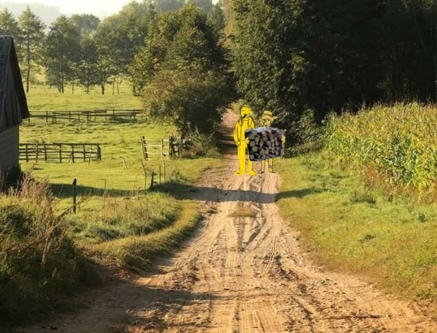
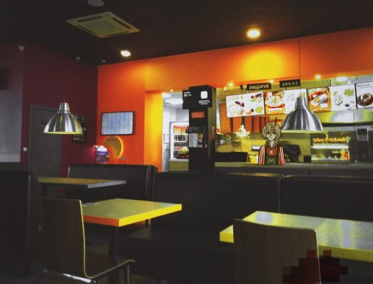
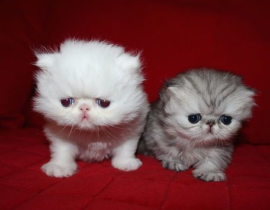

LOCAL
LOCAL REPORTS AND INVESTIGATIONS
У ПРОСТОГО ДОБРОДУШНОГО ФЕРМЕРА УКРАЛИ ОКОЛО 15 МЕШКОВ КАРТОФЕЛЯ И 3 СВИНЬИ
December 7, 2***- 9:09 PM
Аморальное преступление на сеновале удивило многих: кто-то украл 15 мешков картофеля и 3 свиней у самого обычного фермера города XXXXX. Местные жители возмущены сложившейся ситуацией и требуют от полиции немедленного расследования. Мы просим всех неравнодушных принять участие в поисках пропавших свиней. Картошку можете оставить себе.

РУКОВОДСТВО СЕТИ ПИТАНИЯ "McDonald's" НАГЛО ОБМАНЫВАЕТ СВОИХ СОТРУДНИКОВ НА ДЕНЬГИ
December 27, 2***- 8:36 AM
Стало известно, что менеджеры сети ресторанов быстрого питания McDonald's в городе XXXXX обманывают своих сотрудников, выдавая зарплату гораздо меньшую, чем обещали, с помощью фиктивных штрафов и других жестоких мошеннических схем. Мы попытались взять короткое интервью у одного из сотрудников этого ресторана, но он отказался комментировать ситуацию и явно куда-то торопился. Вот что нам удалось зафиксировать:
"ну я думал что просто работаю плохо"
Мы просим всех неравнодушных людей бойкотировать этот ресторан и поддержать бывших сотрудников в комментариях.

ПРОПАЛ ДОМАШНИЙ ПИТОМЕЦ, ПОМОГИТЕ НАЙТИ ЗА ВОЗНАГРАЖДЕНИЕ
June 13, 2***- 8:18 AM
Пропал любимый питомец, пожалуйста, помогите его найти! За помощь полагается крупное вознаграждение. Отличительные черты (фото не понадобится, узнаете сразу): живой циллиндр, много глаз, красивый бантик, немного агрессивный, любит есть свежее мясо! Если располагаете хоть какой-нибудь информацией, напишите мне пожалуйста в XXXXXXXXX @mesmer_68
